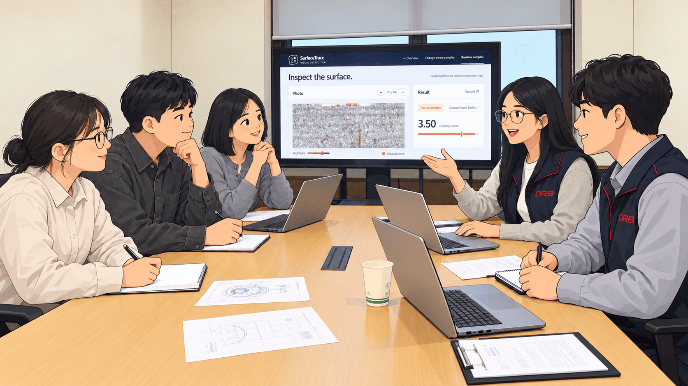
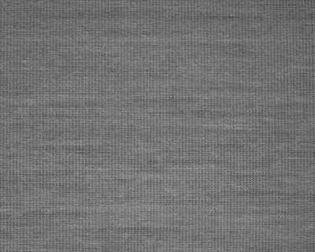

TSFABRICS · RECORDED RESULTS
From feedback to decision.
FIELD FEEDBACK
From single photos to changing runs.
The first prototype used labeled photos. The new experiment follows production frames over time. Defect labels guide neither reference selection nor review requests.

FOUNDATION FEATURES
See what the patches reveal.
Handcrafted features use all startup frames; DINOv2 selects its reference. Both score the same recorded photos.


Same photo · model-specific heatmaps
VISUAL SHIFT
The appearance changes.
A separate production run begins. Global image features are tracked across consecutive windows.

Two recorded runs joined at a known boundary.
INTERVAL SCORES
Spread checks across the run.
The frozen reference scores 2,884 frames. High scores can cluster around one event, so eight review requests are spaced at least 16 frames apart.
LIMITED REVIEW
Check the selected photos.
Each recorded result appears only when its photo is checked. Confirmed defects stay out of the normal reference.
Two checks first
FOUR DEFECT RUNS · SAME EIGHT-CHECK BUDGET
SEPARATE 15-RUN VALIDATION
Hold the candidate.
Reviewed normal photos can form a trial reference. On later frames, it removes normal alerts but also misses more defects, so the frozen reference remains active.
Frozen referenceReviewed candidate
15 eligible runs · 20,273 normal frames · 642 defect frames
Read the validation ↗Recorded TSFabrics images and model outputs · Dataset ↗